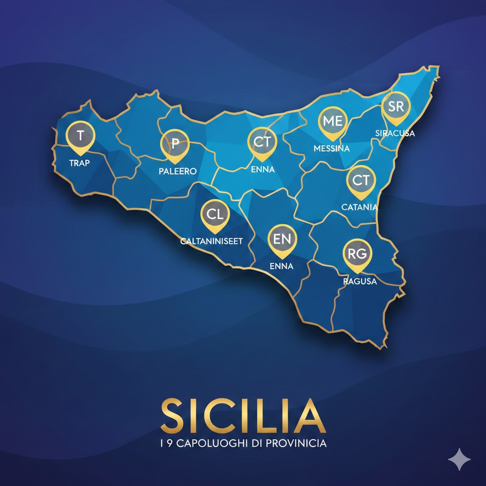

Inquadramento storico generale
Le piazze dei nove capoluoghi siciliani non sono soltanto snodi urbanistici, ma il palinsesto vivente di una civiltà millenaria. Attraversare questi spazi significa sfogliare un libro di pietra dove ogni capitolo è scritto da una cultura diversa: dall'eco delle agorà greche alla razionalità dei fori romani, dal misticismo delle cittadelle arabo-normanne fino all’esuberanza scenografica del Barocco e alla monumentalità del Novecento.
In questo mosaico di identità, la piazza siciliana si manifesta come una "stanza a cielo aperto", un teatro quotidiano dove la luce mediterranea modella i volumi della pietra calcarea, del marmo e della roccia lavica. Se a Palermo e Catania la piazza è il palcoscenico del potere monumentale e della resilienza vulcanica, a Siracusa e Ragusa essa diventa un raffinato salotto di luce, dove il tempo sembra essersi fermato nell'armonia delle forme barocche. Nelle città di Messina, Trapani e Agrigento, lo spazio si apre verso il mare o verso la Valle, facendosi frontiera tra la terra e l'orizzonte, mentre nei cuori interni di Enna, Caltanissetta e dei loro centri storici, la piazza rimane il custode severo di tradizioni agricole e spirituali immutate.
Ogni piazza è un'isola nell'isola: un luogo di stratificazioni profonde dove cattedrali sorte su templi pagani dialogano con palazzi nobiliari e sedi civiche. Questo sito celebra l’essenza di questi nove cuori pulsanti, simboli di una Sicilia che si riconosce nell'abbraccio dei suoi spazi pubblici, veri custodi della memoria collettiva e della bellezza universale.
